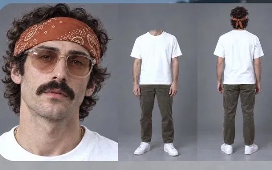

Nano Banana · ChatGPT · Google Flow · Prompt library
Remote Talent Hub advert prompts
The full script for the ProudToBeMe Remote Talent Hub paid advert, the request that started it, the three-panel character sheets for Sophie, Callum and Ellie, and a location and image prompt for every scene.
The prompt sent with the script, plus the reference sheet every character sheet copies.
Original promptSent with the script and the reference image
I want a detailed description of character and the location for every scene in this story, i want the character sheet to look like the character sheet attached with 3 panels one close up, no head on the second panel, and a backview, i want the images to be like a real person not cartoon not 3d animation. ask me any question to make this perfect

Reference layout: close-up, headless front view, back view on a grey studio backdrop.
Answers given: three white British characters, real London locations, made with ChatGPT and Nano Banana for images and Google Flow for video.
Part two
Advert script
ProudToBeMe Remote Talent Hub, paid advert. Core message: your business needs support, not more work.
Scene 1 · The overwhelm
A female founder sits at her desk late in the evening, laptop open, papers everywhere, planning the launch of her new tech company. She writes: Website. Marketing. Admin. Research. Customer enquiries. She calculates the costs: £800… £1,500… £2,000… The total reaches £30,000+. She leans back, overwhelmed, then picks up her phone and scrolls.
VO: "She had the vision. She had the business plan. But every new task seemed to come with another cost."
Scene 2 · She finds ProudToBeMe
She sees ProudToBeMe Remote Talent Hub on her phone and clicks. The services appear:
Email & Calendar Management
Inbox Organisation & Response
Scheduling & Appointments
Travel Bookings & Itinerary Management
Data Entry & CRM Updates
Online Research
File & Cloud Organisation
£850 / MONTH · Up to 20 hours of admin support
She smiles.
VO: "Then she discovered she didn't need to build an entire team. She could simply get the support she needed."
Scene 3 · The cinematographer
A male cinematographer films at an event when his phone starts buzzing. Email after email. His calendar is full, a travel booking is pending and files are scattered across his laptop. His inbox shows 47 UNREAD EMAILS. He sighs.
VO: "For him, the problem wasn't finding clients. It was keeping up with everything happening behind the scenes."
He discovers ProudToBeMe and the £850/month Basic Plan. The services animate on:
Email & Calendar Management
Inbox Organisation & Response
Travel Bookings & Itinerary Management
Data Entry & CRM Updates
Online Research
Document Formatting
File & Cloud Organisation
Up to 20 Hours of Admin Support
He clicks GET STARTED.
Scene 4 · The creative business owner
A creative and events business owner tries to run everything herself. Her screen shows: Social Media, behind schedule; Newsletter, not sent; Content, unfinished; Monthly report, pending. She makes a graphic, sees it looks poor, deletes it and sighs. Then she sees the Standard Plan:
Everything in Basic Plan
Social Media Management (2 Platforms)
Content Creation (8 Posts/Month)
Post Scheduling & Engagement
Monthly Newsletter Creation & Send
Basic Graphic Design (3 Posts/Month)
Monthly Performance Report
Up to 60 Hours of Support
£4,999 · Standard Plan
Her face lights up.
VO: "And when the business needs more than administration, there is room to grow."
Scene 5 · The business grows
A fast montage. The creative's social media is managed, posts are scheduled, a newsletter goes out and a report is generated. The founder receives an organised inbox. The cinematographer sees: TRAVEL BOOKED ✓ / FILES ORGANISED ✓ / CLIENT EMAILS RESPONDED ✓. Then the Premium package appears:
Everything in Standard Plan
Advanced Social Media Management (3–4 Platforms)
Content Creation (12–16 Posts/Month)
Paid Ad Management & Reporting
Website Updates & Maintenance
Lead Generation Support
Advanced Reporting & Insights
Up to 100 Hours of Support
£8,999 · Premium Plan
VO: "And for businesses ready for more comprehensive support, Premium brings marketing, content, advertising, websites, lead generation and reporting together."
Scene 6 · The transformation
Split screen. Before: the founder overwhelmed; the cinematographer with 47 unread emails; the creative with everything overdue. The screen flashes. After: the founder focused on growing her company; the cinematographer on his next production; the creative on her customers and events. All three are calm, productive and working.
Final scene · End card
Clean white and purple ProudToBeMe screen: YOUR BUSINESS NEEDS SUPPORT. NOT MORE WORK. PROUDTOBEME REMOTE TALENT HUB · ADMIN • MARKETING • BRANDING • WEB • CRM.
£850 / MONTH | £4,999 | £8,999
FIND THE SUPPORT THAT FITS YOUR BUSINESS. Visit the website → Explore the brochure → Get started →
VO: "You focus on the business. We help manage the work."
Creative direction: the narrator doesn't read every service; the visuals carry the package details. Keep transitions fast for paid social, but leave time to read the prices. End with a clear call to action to the VA landing page.
Part three
Character sheets
Make each sheet first in Nano Banana or ChatGPT, then upload it as a reference (an Ingredient in Flow) every time that character appears. Paste the layout block in place of [LAYOUT BLOCK ABOVE].
Layout blockStarts every character sheet prompt
A three-panel photographic character reference sheet, horizontal 16:9 format, all three panels on a seamless mid-grey studio backdrop with soft, even studio lighting and a light floor shadow.
Panel 1 (left): tight close-up portrait of the face and upper shoulders, looking straight into the camera, neutral relaxed expression, shot on an 85mm lens, sharp focus on the eyes.
Panel 2 (middle): full-body front view, standing straight with arms relaxed at the sides, cropped at the neck so the head is completely out of frame, showing the full outfit and shoes.
Panel 3 (right): full-body back view of the same person including the back of the head, same standing pose.
Photorealistic photograph of a real person, natural skin texture with visible pores and small imperfections, true-to-life colours, editorial fashion lookbook style. Not illustration, not cartoon, not 3D render, not CGI, no text, no labels.
Sophie HartThe founder · 32
[LAYOUT BLOCK ABOVE]
The person: a white British woman aged 32, slim build, around 5'6". Shoulder-length wavy light-brown hair with natural chestnut tones, side parting, one side tucked behind her ear. Hazel eyes, light freckles across her nose and cheeks, defined eyebrows, minimal natural makeup, soft pink lips. Small gold hoop earrings and a fine gold chain necklace.
Outfit: oversized cream ribbed knit jumper with the front loosely tucked in, high-waisted black tailored straight-leg trousers, clean white leather trainers. A thin silver watch on her left wrist.
Personality to show in the portrait: intelligent, driven, slightly tired but determined.
Callum ReidThe cinematographer · 36
[LAYOUT BLOCK ABOVE]
The person: a white British man aged 36, athletic build, around 6'0". Short, slightly messy dark-brown hair, fuller on top with shorter sides. Short stubble beard, blue-grey eyes, faint crow's feet, slightly weathered outdoor complexion.
Outfit: plain black crew-neck t-shirt, olive-green utility vest with multiple chest pockets, charcoal-grey cargo trousers, black leather lace-up work boots. Black over-ear wireless headphones resting around his neck, a black smartwatch on his left wrist, a black camera strap over one shoulder.
Personality to show in the portrait: focused, capable, hard-working, a little stretched thin.
Ellie MarshThe creative business owner · 28
[LAYOUT BLOCK ABOVE]
The person: a white British woman aged 28, medium build, around 5'5". Long copper-red hair worn in a loose low bun with soft face-framing strands. Green eyes, light freckles, rosy cheeks, warm natural makeup with a terracotta lip. Gold statement hoop earrings and layered thin gold necklaces.
Outfit: a flowing terracotta and mustard floral-print blouse with puff sleeves, wide-leg cream linen trousers, tan leather loafers. A stack of thin gold bangles on one wrist.
Personality to show in the portrait: warm, creative, sociable, bright energy.
Continuity: keep Sophie's cream jumper, Callum's olive vest and Ellie's floral blouse in every scene. They're how viewers tell the three apart in the fast montage. If a face changes, regenerate with the character sheet attached again.
Part four
Scene prompts
Every scene prompt ends with the style line. Paste it in place of [STYLE LINE]. Add website screens, prices, checkmarks and the logo in your editor, since AI tools often misspell text.
Style lineEnds every scene prompt
Vertical 9:16 frame, photorealistic cinematic film still, shot on an ARRI Alexa with a 35mm lens, shallow depth of field, natural film grain, realistic skin texture, cohesive colour grade with soft purple and warm amber tones. Not illustration, not 3D, not cartoon.
Scene 1The overwhelm
Location: a small second bedroom used as a home office in a Victorian terraced flat in Hackney, East London, at 11pm. Rain streaks the sash window, with orange streetlights and wet brick terraces outside. White desk, cork board with sticky notes, a cold half-drunk mug of tea and a small desk plant.
Sophie at her desk
Sophie Hart
Using the reference image of Sophie Hart (same face, hair and outfit, sleeves of her cream jumper pushed up, hair slightly messier than usual): Sophie sits at a cluttered white desk late at night, open laptop glowing, papers, receipts and a notebook spread everywhere, writing a list with a pen. A warm desk lamp is the only light source, mixed with cool blue laptop glow and orange streetlight through a rain-covered sash window behind her. She leans back in her chair, hand pressed to her forehead, looking overwhelmed at the notebook. [STYLE LINE]
Motion for Flow: slow push-in on her face as she leans back and exhales, then she reaches for her phone and scrolls, her face lit by the screen.
Scene 2She finds ProudToBeMe
Location: the same Hackney home office a few minutes later, same lighting and rain.
Sophie discovers the site
Sophie Hart
Using the reference image of Sophie Hart: close-up over-the-shoulder shot of Sophie holding her smartphone, the screen glow lighting her face, her expression shifting from tired to curious. Then a medium close-up as a genuine, relieved smile spreads across her face. Desk lamp light, rain on the window softly out of focus behind her. Phone screen is blank bright white (to be replaced in editing). [STYLE LINE]
Editing: add the website, the service list and "£850 / MONTH" over the phone screen.
Scene 3The cinematographer
Location 1: an evening corporate launch in a converted brick warehouse in Shoreditch, with exposed brick, steel beams, warm festoon lights, guests mingling in soft focus and a speaker at a lectern. Location 2: a quiet corner by the equipment cases, his open laptop on a flight case with a cluttered desktop.
Filming, phone buzzing
Callum Reid
Using the reference image of Callum Reid: Callum films the event with a professional cinema camera on a shoulder rig, eye pressed to the viewfinder, guests and festoon lights blurred in the background. His phone buzzes repeatedly in his vest pocket; he lowers the camera, pulls out the phone and frowns at the screen. [STYLE LINE]
Overwhelmed by the flight case
Callum Reid
Using the reference image of Callum Reid: Callum stands beside a black equipment flight case at the edge of the warehouse venue, camera rested on the case, scrolling his phone with one hand, his open laptop next to him showing a cluttered desktop. He sighs heavily, shoulders dropping, rubbing the back of his neck. Moody low light, festoon bulbs bokeh behind him. Phone screen blank bright white. [STYLE LINE]
Motion for Flow: handheld feel while filming, then the camera settles as he sighs. End on his thumb tapping the phone; add "GET STARTED" in editing.
Scene 4The creative business owner
Location: Ellie's events and creative studio in a railway arch in Peckham, South London, mid-afternoon, daylight through a large arched window. Mood boards with fabric swatches and flower photos, dried flowers, ribbon rolls, a rail of table linens and stacked event props around a big wooden worktable with a laptop and ring light.
Disappointed at the laptop
Ellie Marsh
Using the reference image of Ellie Marsh: Ellie sits at a busy wooden worktable in a railway-arch creative studio, surrounded by mood boards, fabric swatches, dried flowers and event props. She stares at her laptop screen with a disappointed expression, lips pressed together, then exhales and slumps slightly. Warm afternoon daylight from a large arched window, soft natural light. Laptop screen blank bright white. [STYLE LINE]
Her face lights up
Ellie Marsh
Using the reference image of Ellie Marsh: close-up of Ellie looking at her phone, her face lighting up with surprise and excitement, a wide hopeful smile, hand raised slightly to her chest. Same railway-arch studio softly blurred behind her. Phone screen blank bright white. [STYLE LINE]
Editing: show the overdue task list and the poor graphic on her laptop, then the £4,999 Standard Plan on her phone.
Scene 5The business grows
Montage: quick, bright daytime moments. The grade turns warmer and lighter to show relief.
Ellie, tidy studio
Ellie Marsh
Using the reference image of Ellie Marsh: Ellie in her railway-arch studio in bright morning light, relaxed and smiling, sipping a coffee while glancing at her laptop, her worktable now tidy and organised. [STYLE LINE]
Sophie, Clerkenwell café
Sophie Hart
Using the reference image of Sophie Hart: Sophie at a sunny café window table in Clerkenwell, London, laptop open, calmly reading her screen with a satisfied half-smile, a flat white beside her, a red London bus soft-focus outside the window. [STYLE LINE]
Callum, King's Cross
Callum Reid
Using the reference image of Callum Reid: Callum on the platform at King's Cross station, camera bag over his shoulder and a rolling equipment case beside him, checking his phone and giving a small relieved nod, morning light through the station's arched roof. [STYLE LINE]
Editing: add the checkmarks, scheduled posts, newsletter send and the £8,999 Premium package as graphics over these shots.
Scene 6The transformation
Split screen: reuse the Scene 1, 3 and 4 images for BEFORE. Generate the three AFTER shots below, then build the split in your editor.
After · Sophie presenting
Sophie Hart
Using the reference image of Sophie Hart: Sophie standing confidently in a bright modern glass meeting room in a London co-working space, presenting to two colleagues in front of a whiteboard, mid-sentence, energised and composed. City rooftops visible through floor-to-ceiling windows. [STYLE LINE]
After · Callum on the South Bank
Callum Reid
Using the reference image of Callum Reid: Callum on location on the South Bank by the River Thames at golden hour, filming a model with his cinema camera, relaxed and fully absorbed in his work, Tower Bridge softly blurred in the background. [STYLE LINE]
After · Ellie at her event
Ellie Marsh
Using the reference image of Ellie Marsh: Ellie at a beautifully styled evening event in an elegant London garden venue with floral installations and candlelit tables, warmly greeting smiling guests, wearing an event lanyard, glowing and calm. [STYLE LINE]
FinalEnd card
Build in your editor or Canva: clean white background, purple brand accents, tagline, pricing row and call to action. For an optional closing shot of the cast before it:
Cast line-up
Sophie HartCallum ReidEllie Marsh
Using the reference images of Sophie Hart, Callum Reid and Ellie Marsh: the three standing side by side in a bright, minimal white studio with soft purple accent lighting, relaxed confident smiles, looking at camera. [STYLE LINE]